Читинский Новый Год на Мамае
2007-2008
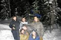
Решили мы как-то с друзьями весело отметить новый год. Но это же надо заморачиваться и думать как и где и че-то мутить… И тут нас с дружественным визитом посещает мысль… А поехали в горы, в глухую тайгу, подальше от цивилизации, к медведям где много снега, чистого воздуха и водка вкусная! И решили мы поехать на Мамай что на Байкале. В Чите это местечко часто путают с другим местом и задают вопрос: «А ты что, на Мамаевом кургане катался?».
Ну так вот 27 (или 28 – ох старость не радость, склероз замучил) числа 6 челов из Читы купили билеты до Выдрино и вечером приперлись на вокзал, а я и еще целая неорганизованная толпа каких-то людей пришли их провожать. Я сразу офигел от размеров рюкзаков, которые эти… м… безумцы… собрались тащить в гору. Еще больше я офигел от веса этих рюкзаков. Больше всего набрали девчонки и Антоха Лохматый, ну ладно Антоха, он лось здоровый, но девчонки второй раз в жизни видят доски и первый раз видят Мамай. Я вслух подумал что не дойдут они до зимовья с такими рюкзаками. Мне сказали фе и идите в, на и к… Короче проводили мы Екстремалов, дали им волшебного пенделя и разошлись по домам.
А на следующий день я выполнив свой общественный долг и отработав на благо родной энергетики стал тоже собираться. Билеты были куплены, осталось упаковать ЛЮКзак. Много в него пихать не стал. В общей сложности литр спиртного (глинтвейн, коньяк и «компот»); ну там хавчика какого-то насовал, потом выкинул все лишнее, оставил все нужное и рюкзак получился довольно легкий.
Вокзал, вагон, сон, ресторан, чай. Около 6 часов по местному я в Выдрино.
Звонит Стэлс, спрашивает где я. Оказалось что я накаркал, и они таки не дошли до Мамая с такими рюкзаками. Оправдываются что тропы не было. А как они хотели? Подъемник что-ли и номера люкс?
Вокзал, билеты, перрон, электричка, Мамай.
Снега по пояс (да больше). Местные жители наверно все с выколотыми глазами уже, ибо темень такая что хоть глаз выколи. Достал фонарик, дошел до трассы, вышел на тропу. Достал фотоаппарат, пофотал елочки, съел шоколадку. Подумал: «о, ништяк!». Потому что в натуре ништяк, тропа есть, ноги есть, внутри желудка шоколадка. Немного жутковато одному идти ночью по тропе. Пару раз встретил мышей на тропе. Хорошо хоть куропатки из под ног не вылетают.
Поднялся довольно быстро, совсем без матов и почти без перекуров. Напугал народ в зимухе кричалкой про питерский зенит: «Кто болеет за Зенит – у того всегда стоит!!!...»
Встретили, накормили, напоили, обогрели, спать уложили, сказку на ночь рассказали, поцеловали перед сном… (дайте мне в ухо, а то что-то я размечтался). Слушаю длинную телегу о том, как они поднимались без тропы 10 часов, как они возвращались на следующий день за рюкзаками и прочие ужасы. А сам вслух думаю: «А я вас предупреждал…»
Договорились на следующий день расчистить крышу от снега, заготовить дров на неделю и прочее…
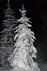
С утра все на все забили, пофиг что 31 число. Пока девченки не разорались никто ничего не хотел делать. Ваня вообще сказал: «Я сюда отдыхать приехал». День был нелегким, но уже вечер, елка наряжена, салаты приготовлены, дрова и вода заготовлены, можно праздновать. Часов в 10 проводили старый год по Чите. 11:45 хоровод, шампанское, поздравления, подарки от Антохи. А потом мы решили сходить к Иркутам. Ну то есть это мы давно решили и это было неотвратимо как и то что мы будем завтра катать и прыгать, прыгать и катать. Тогда мы еще не знали где зимуха. Прошли мимо, хотя нам что-то кричали из лесу, но мы подумали что это пьяные аборигены развлекаются :). Дошли до кунга, разбудили народ. А они там оказывается в трусах ходят. Во дают! Ладно, вернулись до места где кричали. Свернули, и о чудо, никаких пятен! Вот она зимуха! ОХУ.. АХРЕ... Короче нет слов какая зимуха. Особенно удивили, что бы вы думали? Стеклопакеты! Ладно щас не об этом. Успели во время. За минуту до иркутского нового года! И тут началось! Песни, пляски, фейрверки, стихи, дед мороз (2 шт.), снегурочки (2-3 шт.) :)))))) Задарили конфетами (наверно чтобы заткнулся, а то че-то долго читал стишок…). Повалялись в снегу, попили для сугреву, пошли к хозяину Мамаев – Кунгу. Там пытались разбудить народ – не очень получилось, попрыгали с кунга – получилось, пофотались – клево. Праздник удался. Напоследок еще повалялись в снегу и разошлись по зимухам.
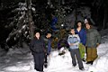
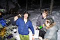
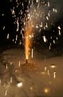
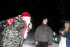
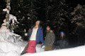
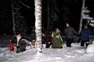
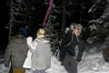
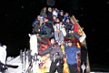
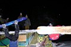
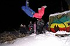
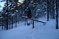
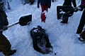
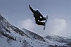
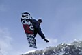
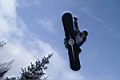
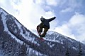
На следующий день много прыгали, фотались. Забрались выше трех берез – почти на вершину – скатили до половины – абалденно. Поднялись еще раз до трех берез – скатили к иркутам в зимуху. День прошел удачно.
2 числа прыгали еще больше, еще больше фотались, еще чаще поднимались до трех берез. Радости нет предела. Хотя нет, есть, и понимается это третьего числа, когда надо уходить. Но мы сюда еще вернемся. На выходе встретили Леху «Наша Маша» (читинская кликуха)))) Четверо наших осталось – разгильдяи, тунеядцы, не учатся и работать не хотят :)))))))
На этом собственно все. Набег на Мамай совершен удачно, без потерь, цель достигнута – новый год отмечен. Фоток уйма, впечатлений еще больше. До скорого!
Соловьев Алексей
Фотографы:
Соловьев Алексей (Я тобишь) (файлы p***)
Сватков Владимир (бородатый такой) (файлы pict***)
Начало сериала здесь...
Январь, Март 2008